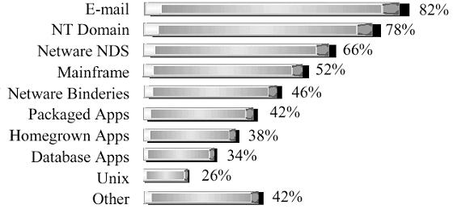

|
|
|
|
| |
รู้จักกับ LDAP (Lightweight Directory Access
Protocol)
โดย สันติ โกศการิกา
วันที่
: March 28,2001
|
Page 1 of 1
1
|
นับตั้งแต่ Internet
มีเข้ามามีบทบาทมากขึ้นในปัจจุบัน ทำให้ระบบ Application
ต่างๆเปลี่ยนไปเป็นรูปแบบกระจาย(Distributed)มากขึ้น
พร้อมกับการเพิ่มขึ้นของผู้ใช้งานที่เข้ามาผ่านช่องทาง Internet
หรือธุรกรรมต่างๆที่เริ่มปรับเปลี่ยนเข้าสู่ระบบ Internet
ทั้งการเพิ่มขึ้นของผู้ใช้งานและธุรกรรมที่เกี่ยวข้องทำให้
Application เริ่มที่จะจัดการยากขึ้น อีกทั้งการรูปแบบของ
Application ที่เปลี่ยนไปเป็นแบบกระจายจะยิ่งเพิ่มความยุ่งยากของ
Admin มากขึ้น
ดังนั้นเรามีความต้องการที่จะจัดการข้อมูลให้มีประสิทธิภาพมากขึ้น
ง่ายต่อการใช้งาน และมีความปลอดภัยสูง...
|
รู้จักกับ LDAP
(Lightweight Directory Access
Protocol)
|
นับตั้งแต่ Internet
มีเข้ามามีบทบาทมากขึ้นในปัจจุบัน ทำให้ระบบ Application
ต่างๆเปลี่ยนไปเป็นรูปแบบกระจาย(Distributed)มากขึ้น
พร้อมกับการเพิ่มขึ้นของผู้ใช้งานที่เข้ามาผ่านช่องทาง
Internet หรือธุรกรรมต่างๆที่เริ่มปรับเปลี่ยนเข้าสู่ระบบ
Internet
ทั้งการเพิ่มขึ้นของผู้ใช้งานและธุรกรรมที่เกี่ยวข้องทำให้
Application เริ่มที่จะจัดการยากขึ้น อีกทั้งการรูปแบบของ
Application
ที่เปลี่ยนไปเป็นแบบกระจายจะยิ่งเพิ่มความยุ่งยากของ Admin
มากขึ้น
ดังนั้นเรามีความต้องการที่จะจัดการข้อมูลให้มีประสิทธิภาพมากขึ้น
ง่ายต่อการใช้งาน และมีความปลอดภัยสูงเพราะบางครั้ง
Application จะต้อง share ข้อมูลกัน ข้อมูล เช่น ข้อมูลของ
User (เช่น Login, Address), Application, Files, Printer
หรือ Resource ต่างๆที่ที่เข้าถึงจาก Network
เราจะเก็บรวมๆเป็น Database พิเศษ เรียกว่า Directory
เมื่อข้อมูลเริ่มมากขึ้น
และลักษณะของข้อมูลเริ่มมีหลากหลายมากขึ้น
สุดท้ายข้อมูลเหล่านี้ก็จะยากต่อการจัดการ และไม่สามารถ
Share กันได้
แต่ถ้าเรานำข้อมูลเหล่านี้มาจัดการรวมกันภายใต้ระบบหนึ่งที่มีความเสถียรและสามารถจัดการได้ก็จะเป็นรูปแบบที่เหมาะกับ
Application แบบกระจายมากขึ้น ดังนั้นจึงเกิด Lightweight
Directory Access Protocol
(LDAP)ซึ่งเป็นมาตราฐานเปิด(Open
Standard)ที่ทำให้สามารถเข้าถึงและจัดการข้อมูลชนิด
Directory ได้ ซึ่งจะช่วยเราจัดการปัญหาเบื้องต้นได้ดีขึ้น
Directory คืออะไร
Directory คือ List
ของข้อมูลซึ่งมีการจัดลำดับและมีรายละเอียดปลีกย่อยต่างๆลงไปอีก
เช่น สมุดโทรศัพท์ ก็ถือว่าเป็น Directory
ในสมุดโทรศัพท์จะมีชื่อ รายนาม และ เบอร์โทร
หรืออาจจะมีเบอร์เพจเจอร์
ซึ่งสมุดโทรศัพท์เราจะลำดับตามรายชื่อผู้ใช้งาน หรือ
บัตรห้องสมุดที่ไว้สำหรับค้นหาชื่อผู้แต่งหนังสือก็ถือเป็น
Directory ได้เช่นกันเพราะก็เป็น List
ของชื่อผู้แต่งที่ลำดับตามค่าๆหนึ่ง
แล้วยังมีรายละเอียดปลีกย่อยอีกเช่น เลข ISBN เป็นต้น
ในความหมายของทางคอมพิวเตอร์ Directory คือ Database
พิเศษที่เก็บชนิดข้อมูลเป็น Object และมีการลำดับไว้
ดังนั้นการระบุชนิดข้อมูลเช่น Printer(Object)
ก็จะมีค่าต่างๆที่เราเข้าถึงได้เช่น
ค่าจำนวนหน้าที่พิมพิ์ได้ต่อนาที(เช่น 5 หน้าต่อนาทีหรือ
10 หน้าต่อนาที) หรือ ค่า Print Stream ที่ support (เช่น
ASCII หรือ PostScript )เป็นต้น นอกจากนี้ Directory
จะยอมให้มีการค้นหาข้อมูลได้เช่น ค้นหา Printer ที่สามารถ
Print ASCII ได้ หรือ
Directory ที่เก็บ
Application Server เราสามารถค้นหา Server ที่สามารถทำระบบ
Billing ได้เป็นต้น
บางครั้งความหมายของสมุดโทรศัพท์หน้าเหลือง(Yellow Pages)
หรือ สมุดรายนามผู้ใช้โทรศัพท์(White
Pages)สามารถช่วยให้เราเข้าใจการทำงานของ Directory
มากขึ้น ถ้าเรารู้จักชื่อของ Object (เช่น
ชื่อคน)เราก็จะสามารถค้นหาจากสมุดรายนามผู้ใช้โทรศัพท์(White
Pages)และได้ค่าที่อยู่มาในที่สุด
แต่บางครั้งเป็นการยากที่เราจะรู้ชื่อที่เฉพาะเจาะจงลงไป
Directory
สามารถจะค้นหารายละเอียดปลีกย่อยลงไปตามหมวดหมู่เช่นเดียวกับ
สมุดโทรศัพท์หน้าเหลือง(Yellow Pages)
แต่จะยืดหยุ่นมากกว่าเพราะไม่ Fix
หมวดหมู่เหมือนสมุดโทรศัพท์หน้าเหลือง(Yellow Pages)
Directory ต่างจาก Database
1.
Directory คือ Database พิเศษแต่ไม่ใช่ Database (เช่น DB2
, Oracle) เพราะ Directroy
สร้างขึ้นมาเพื่อมีลักษณะเฉพาะบางอย่างเพิ่มขึ้นมาและที่มีบางส่วนเหมือน
Database ลักษณะที่สำคัญของ Directory คือ
สร้างมาเพื่อเน้นการเข้าถึง(read และ search)
แต่ไม่ได้ทำมาสำหรับการ Update(write) บ่อยๆ เช่น
ข้อมูลเบอร์โทรของคนอาจจะมีคนเข้ามาค้นหาวันละเป็นพันครั้ง
ดังนั้น Directory จึงทำมาเหมาะสำหรับการค้นหาบ่อยๆ แต่การ
Update จะเป็นหน้าที่ของ Admin หรือเจ้าของข้อมูลนั้น
ชึ่งมีเพียงไม่กี่คนที่สามารถ Updateได้
2. Directory
ทำเมือ่เก็บข้อมูลที่มีการเปลี่ยนแปลงไม่บ่อย(Static Data)
ไม่เหมาะกับการเก็บข้อมูลที่เปลี่ยนแปลงบ่อย(Dynamic Data)
เช่น ข้อมูลของ Printer ความสามรถในการ Print ควรเก็บไว้ใน
Directory แต่ Job Queue ของ Printer
ที่มีการเปลี่ยนแปลงบ่อยไม่ควรเก็บไว้ใน Directory
3.
Directory ไม่ Support Atomic Transaction(
ทำต้องทำทั้งหมด ถ้าไม่ทำก็ไม่ทำเลย) เพราะเนื่องจาก LDAP
เน้นการอ่าน มากกว่าเขียน
ดังน้นเพื่อที่จะให้อ่านได้เร็วขึ้นจึงจำเป็นต้องเสียส่วนนี้ไปซึ่งต่างจาก
Database นอกจากนี้ Directory ก็ไม่สนับสนุน Isolation
(การ Update ข้อมูลพร้อมๆกัน)
เพราะเป็นข้อมูลที่มีเพียงไม่กี่คนที่ Update ได้ (มี
Directory ของบาง Vendor ที่สนับสนุนการทำ Transaction
บ้างแล้ว)
4. ข้อมูลใน Directory
บางครั้งอาจเป็นข้อมูลที่ไม่ถูกต้อง(ในแง่ของผู้ใช้
ไม่ใช่ระบบ) เช่น
ที่อยู่ของคนอาจไม่ถูกต้องเพราะคนคนนี้ย้ายที่อยู่ไปแล้ว
ดังนั้นไม่ควรเก็บข้อมูลที่ sensitive (เช่น ยอด Balance
ของบัญชี)ไว้ที่ Directory
(เป็นเรื่องไม่สมควรอยู่แล้วเพราะ Directory ไม่สนับสนุน
Transaction)
5. การใช้ Database เก็บข้อมูลของ
Application เช่น การเก็บข้อมูลของลูกค้าในระบบ Billing
เมื่อเราเพิ่มระบบอื่นเข้าไปเช่น Mail ทำให้ Admin
ยุ่งยากเช่นอาจจะต้องเพิ่ม Column
เข้าไปในตารางที่เก็บข้อมูลลูกค้า แต่ถ้าใช้ Directory
จะง่ายต่อการ Extend
6. Database จะใช้ SQL แต่
Directory
จะมีภาษาที่ต่างไปและจะช่วยให้เข้าถึงได้เร็วขึ้น
ความแตกต่างระหว่าง Database และ Directory
ทำให้ผู้ออกแบบระบบต้องคำนึงถึง และ
เข้าใจในข้อจำกัดของความแตกต่างทั้งสองเพื่อที่จะได้แบ่งแยกได้ถูกว่าข้อมูลชนิดไหนควรจะเก็บลง
Database หรือ Directory
Distributed
Directory
คำว่า Local, Global, Distributed,
Centralized, Partition และ Replicated
เป็นคำที่ค่อนข้างใช้บ่อยใน Directory สำหรับ Local กับ
Global เป้นคำที่คุ้นเคยกันดีอยู่แล้ว เราอาจแบ่ง
Directory เป็น Local Directory
เพื่อเก็บข้อมูลพนักงานในแต่ละแผนก และมี Global Directory
เก็บข้อมูล บริษัท หรือ เมือง เป็นต้น สำหรับ Distributed
Directory หมายถึงเราจะใช้ Directory
หลายตัวช่วยกันเก็บข้อมูล หรือนำข้อมูลไว้หลายที่ ส่วน
Centralized Directory หมายถึงเก็บข้อมูลไว้ที่เดียว
ถ้าเราเก็บข้อมูลแบบ Distributed Directory
เราก็จะแบ่งได้อีกว่าเป็น Partition
คือข้อมูลที่แบ่งกันเก็บนั้นไม่ซ้ำกัน ส่วน Replicated
Directory จะเก็บข้อมูลบางส่วนที่ซ้ำกัน การเก็บข้อมูลแบบ
Distributed Replicated Directory จะดีในแง่ถ้ามี
Directory
ใดไม่ทำงานก็จะสามารถใช้ข้อมูลจากอีกตัวได้แต่ก้มีข้อเสียที่เราจะต้องจัดการให้ข้อมูลทั้งสองที่เหมือนกัน
Directory Enabled
Application
ถ้าเราสร้าง Application จองห้องประชุม
ในกรณีที่แย่ที่สุด เราไม่ใช่ระบบ Direcotry เลย
ผู้ใช้ทำการจองห้องจะต้องจำว่าห้องประชุมนั้นจุคนได้เท่าไหร่
มีเครื่องอำนวยความสะดวกอะไรบ้าง คนที่มาจองน้นมี email
อะไร ผู้เข้าประชุมคนใดบ้างที่ได้รับ notices
แล้วทำให้ยากต่อการใช้ แต่ถ้าเราใช้ระบบ Directory
จะช่วยให้เราจัดการได้ง่ายขึ้น มี Directory
ของห้องประชุมที่มีข้อมูลต่างๆ(เช่น
ขนาด,สถานที่ตั้ง,อุปกรณ์ต่างๆในห้องประชุม) มี Direcotry
ของคนที่เก็บขัอมูลต่างๆ (เช่น ชื่อ,เบอร์โทร,ที่อยู่) ที่
Application นี้สามารถเข้าถึงได้
แต่ว่าปัญหาไม่ได้หมดเพียงเท่านี้
มีบางสิ่งที่ต้องพิจารณาเช่น Directory นี้สามารถใช้ได้ทุก
Platform หรือไม่ แล้ว Service ของ Directory
จะใช้ได้ตลอดเวลาหรือไม่(ในที่นี้เราแยกส่วนของข้อมูลออกมาจาก
Logic) แล้วถ้ามีระบบอื่นมาร่วมใช้ข้อมูลกับระบบนี้ด้วยละ
จะทำอย่างไรดี และในบางครั้งเองการที่มี Application
หลากหลายทำให้แต่ละ Application มี Direcotory
เป็นของตนเองทำให้มีปัญหาที่จะใช้งานข้อมูลร่วมกัน เช่น
e-mail ที่มีอยู่ในทั้ง mail Application และ
ระบบจองห้องประชุมทำให้ยากต่อการจัดการ
ปัญหาดังกล่าวนำไปสู่มาตราฐานของ Common Directory
ที่มีมาตราฐาน API และ มีความน่าเชื่อถือที่ Application
สามารถใช้ร่วมกันได้ LDAP ก็เป็นมาตราฐานหนึ่งที่ใช้กันใน
Direcotry นอกเหนือจาก X.500 (X.500 สื่อสารด้วย OSI Layer
แต่ LDAP จะใช้ TCP/IP
X.500จะใช้ในองค์กรที่ขนาดใหญ่มากๆ)

รูปที่
1 แสดงถึง Application ที่มี Directory (สัมภาษณ์จาก
บริษัทชั้นนำ source: Forrester)
LDAP เป็น
Protocol หรือ Directory
LDAP เป็น Protocol
ที่ใช้ติดต่อกันเช่นเดียวกับ HTTP LDAP จะมีค่า port
default ที่ 389 แต่ถ้าเราพูดถึง LDAP Server
ในกรณีนี้เราหมายถึง Directory นอกจากเราใช้ LDAP เป็น
Directory แล้วเราสามารถใช้ LDAP เป็น gateway ที่ connect
ไปยัง X.500 Server ได้อีกด้วย ในครั้งถัดไปเราจะพูดถึง
LDAP ให้ละเอียดมากกว่านี้
Summary
จากบทความนี้คงทำให้เรารู้จักกับ
Directory และ LDAP และเข้าใจมากขึ้น
ยังมีหลายเรื่องที่ละไว้สำหรับบทความนี้เช่น
เรื่องความปลอดภัยที่ใช้ policy base และ ACL หรือ Meta
Directory สำหรับผู้ที่สนใจ LDAP Server สามารถ Download
LDAP Server มาทดลองใช้งานเช่นที่ www.ibm.com หรือ
www.iplanet.com นอกจากนี้ยังมี product
อีกหลายค่ายที่สนับสนุน LDAP เช่น Novell,Lotus,Tivoli
หรือ microsoft(Active Directory) |
Reference |
1.
http://www.software.ibm.com/network/directory
2.
http://www.ietf.org (RFC1777) |
www.thaicool.net
| |
|
 |
|
Copyright © Thaicool.net. All rights reserved.
| |